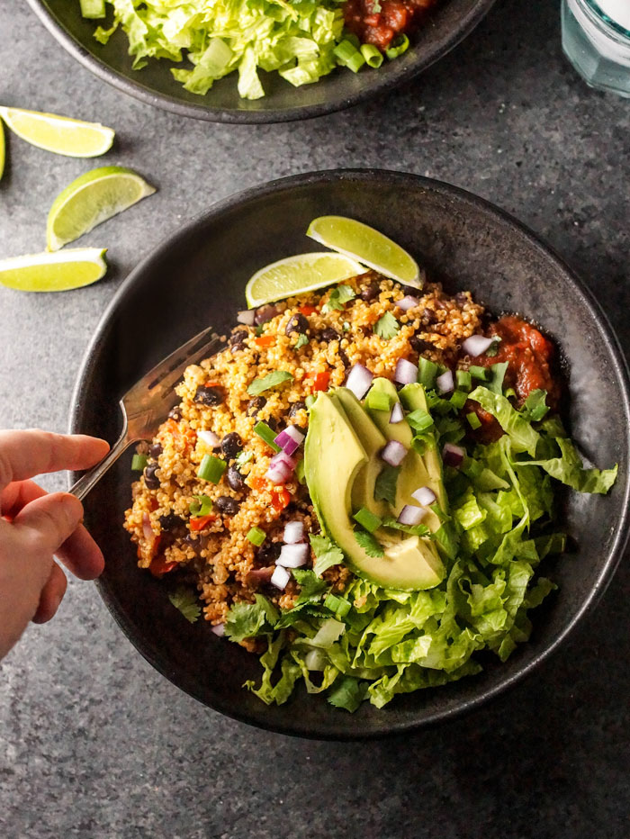

Instant Pot Quinoa Burrito Bowls

Description
Quick, simple and delicious quinoa burrito bowls! This recipe is great to make and store for a quick meal after work or to pack on
the go for a healthy lunch. Eat as is, or wrap in a tortilla with your favorite meat and burrito toppings.
Ingredients
- 1 cup Quinoa
- 1 cup Water
- 1 can Black beans
- 1/2 cup Salsa
- 1 Onion
- 1 Green pepper
- 2 tsp Cumin
- 1 tsp Salt
- 2 tbsp Olive Oil
Steps
- Saute onion and green pepper in Instant Pot until onion is translucent (about 8 minutes). Add cumin and salt about halfway through
- Turn off the Instant Pot for a moment. Add the water and quinoa, stir.
- Add drained beans and salsa. DO NOT STIR
- Cook on "Rice" setting for 12 minutes
- Allow pressure to naturally release for 15 minutes
- Release pressure, stir and serve or store!